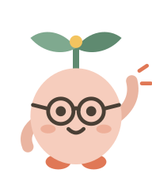
TemanTumbuh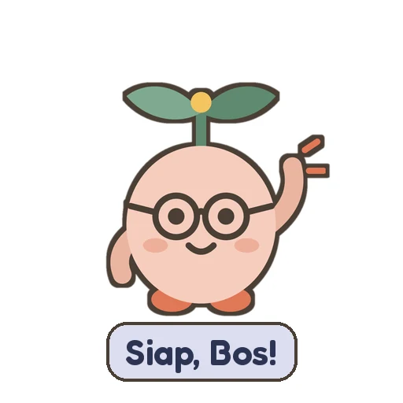
GRATIS
Stiker WA Kode Rumah Tangga
16 stiker Tunas buat chat sama pasangan dan grup keluarga. Dari giliran gendong, popok habis, sampai "aku salah, aku tahu".
Tambah ke WhatsAppLewat aplikasi Sticker.ly, gratis.
CARA PASANG
- Tap tombol di atas.
- Belum punya Sticker.ly? Install dulu dari Play Store atau App Store, terus tap tombolnya lagi.
- Di halaman pack, tap Add to WhatsApp. Stikernya langsung muncul di WA.
Dari istri
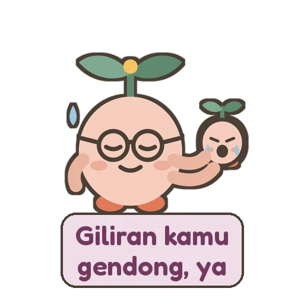
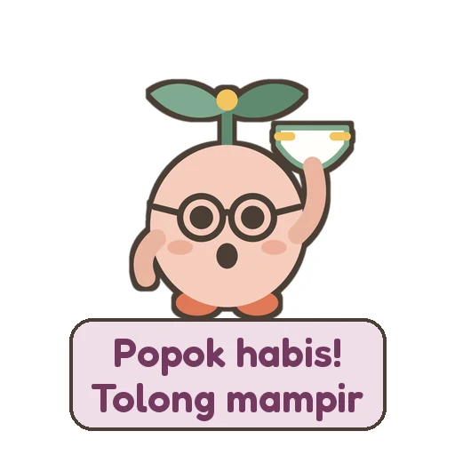
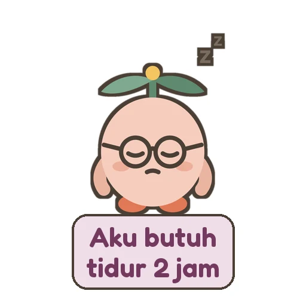
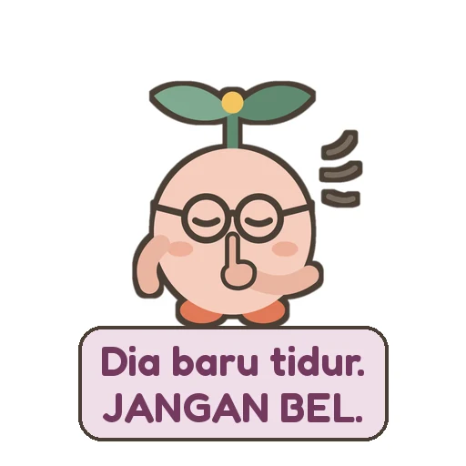
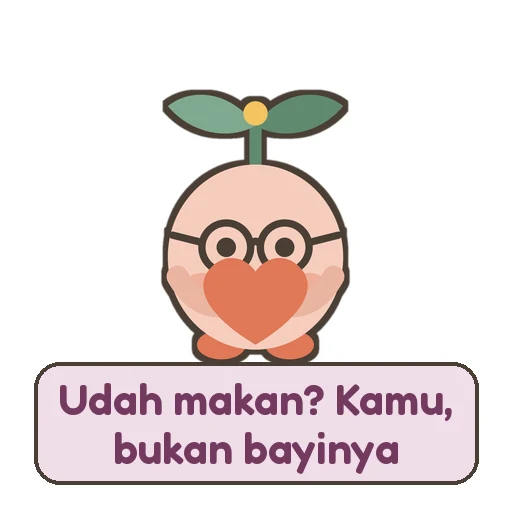
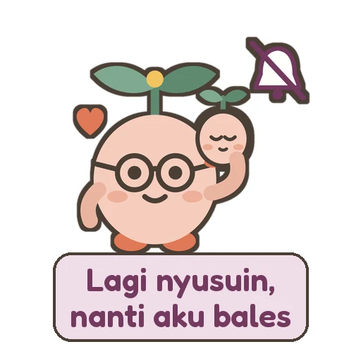
Balesan suami
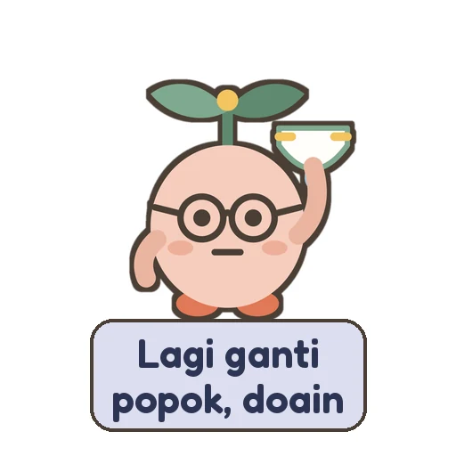
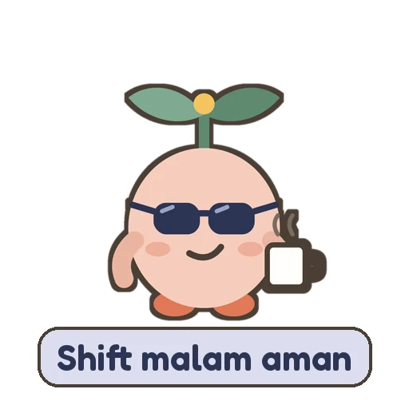
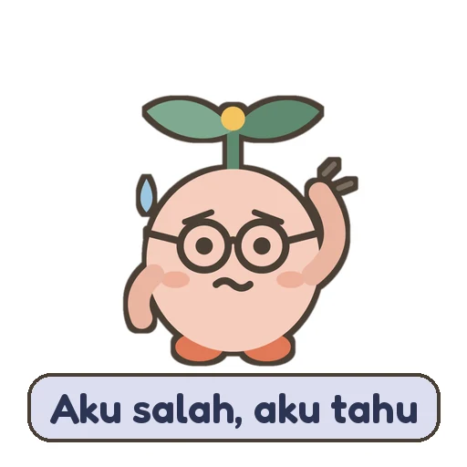
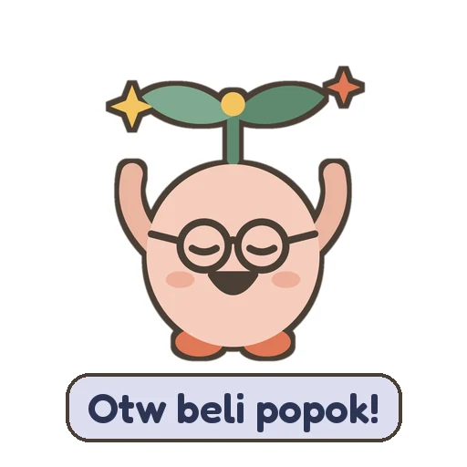
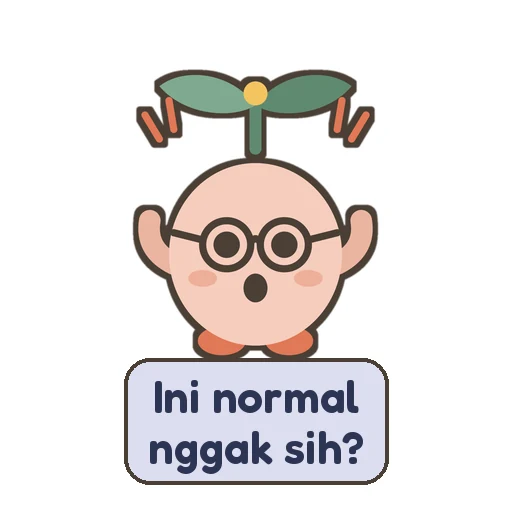
Buat grup keluarga
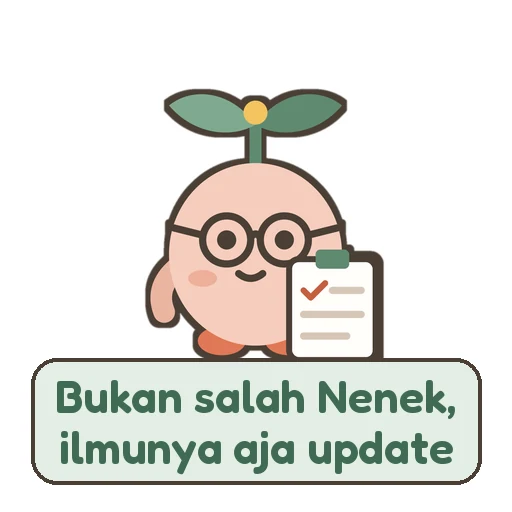
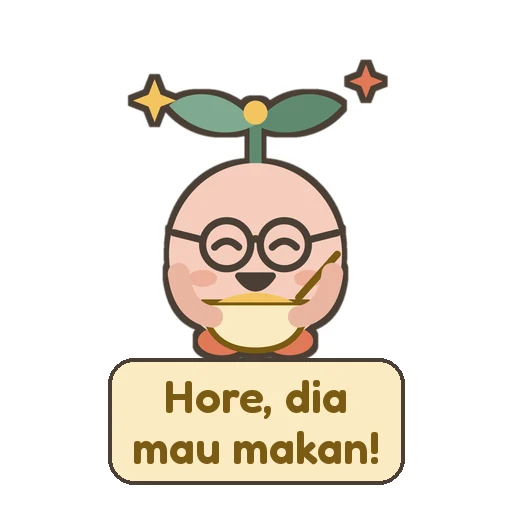
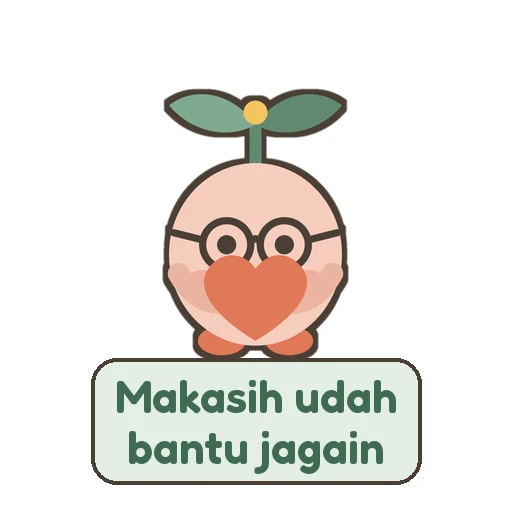
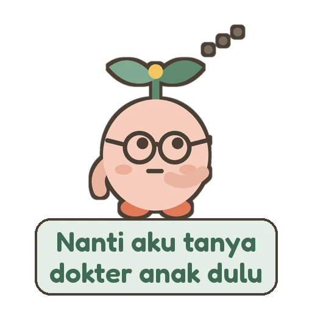